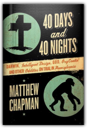
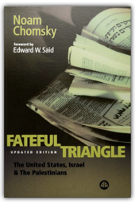
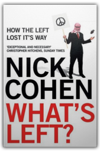
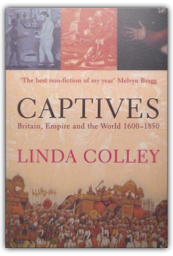
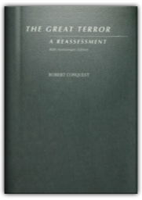
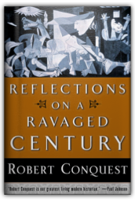
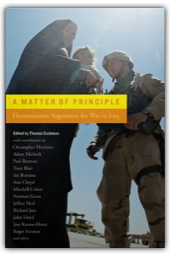
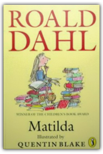

|

40 Days and 40 Nights: Darwin, Intelligent Design, God, OxyContin®, and Other Oddities on Trial in Pennsylvania
Matthew Chapman

In this fascinating story of evolution, religion, politics, and personalities, Matthew Chapman captures the story behind the headlines in the debate over God and science in America.
American Power and the New Mandarins: Historical and Political Essays
Noam Chomsky
American Power and the New Manderins in the first significant work of social and political thought to come out of the Vietnamese catastrophe... I is the first draft of a declaration of intellectual independence, and though it deals with the past, its true significance must rest with the future." -Robert Sklar, The Natin
The Culture of Terrorism
Noam Chomsky
With a detailed critique of Irangate, Culture of Terrorism demonstrates how America's ruling elite perpetrates a particularly vile form of cultural imperialism — accusing America's enemies of precisely those 'terrorist' attributes that might more accurately describe the actions of America itself.

The Fateful Triangle: The United States, Israel and the Palestinians
Noam Chomsky
Since its original publication in 1983, Fateful Triangle has become a classic in the fields of political science and Middle East affairs. This new edition features new chapters and a new introduction by Noam Chomsky and a foreword by Edward Said. Examining America's search for a 'reliable ally' in the Middle East, Chomsky untangles the intricacies of the US-Israeli-Palestinian relationship and lays bare the contortions, lies and misinformation that have been used over the years to obscure the real agenda. In the process he reveals the extent to which modern nation-states make claims for peace while actively pursuing very different objectives. In three new chapters Chomsky examines the Palestinian Uprising, the 'Limited War' in Lebanon and the Israeli-PLO Accords after the Oslo signings. This is a timely and much-needed corrective to the mythmaking that has obscured the real history of peace negotiations in the Middle East.
Counsel to the President: A Memoir
Clark Clifford
The memoirs of a legendary White House advisor chronicle the five decades he spent as an influential figure in Oval Office decision-making, from the recognition of Israel to the Vietnam War. Reprint. Major ad/promo. K. NYT.

What's Left?: How the Left Lost Its Way
Nick Cohen
Acclaimed political commentator Nick Cohen investigates the confusing current status of his own political affiliates, the Left, in this hard-hitting, no-holds-barred survey. He searches for the seemingly impossible answers to such questions as: Why are apologies for a militant Islam—which stands for everything the liberal-Left is against—coming from the Left? After the American and British wars in Bosnia and Kosovo against Slobodan Milosevic's ethnic cleansers, why were men and women of the Left denying the existence of Serb concentration camps? Why is Palestine a cause for the liberal-Left, but not China, the Sudan, Zimbabwe, or North Korea? And exactly who or what are the Left fighting for? With biting satire and sharp insight, this sprawling survey reclaims the values of democracy and solidarity, identifies the core tenets of modern liberal thought, and established a new, proactive definition of the Left.

Captives
Linda Colley
Ranging over a quarter of a millennium and four continents, Captives uncovers the experiences and writings of those tens of thousands of men and women who took part in Britain's rise to imperial pre-eminence, but who got caught and caught out. Here are the stories of Sarah Shade, a camp follower imprisoned alongside defeated British legions in Southern India; of Joseph Pitts, white slave and pilgrim to Mecca; of Florentia Sale, captive and diarist in Afghanistan; of those individuals who crossed the cultural divide and switched identities, like the Irishman George Thomas; and of others who made it back, like the onetime Chippewa warrior and Scot, John Rutherford. Linda Colley uses these tales of ordinary individuals trapped in extraordinary encounters to re-evaluate the character and diversity of the British Empire. She explores what they reveal about British responses to, relations with, and frequent dependence upon different non-European peoples. She shows how British attitudes to Islam, slavery, race, and American Revolutionaries look different once the captive's perspective is admitted. And she demonstrates how these individual captivities illuminate the limits of Britain's global power over time - as well as its extent. Richly illustrated and evocatively written, Captives is both a magnificent and compelling work of history, and a powerful and original reappraisal of the significance and survivals of empire now.

The Great Terror: A Reassessment
Robert Conquest
The definitive work on Stalin's purges, Robert Conquest's The Great Terror was universally acclaimed when it first appeared in 1968. Harrison Salisbury called it "brilliant...not only an odyssey of madness, tragedy, and sadism, but a work of scholarship and literary craftsmanship." And in recent years it has received equally high praise in the former Soviet Union, where it is now considered the definitive account of the period.

Reflections on a Ravaged Century
Robert Conquest, Conquest, Weil
Robert Conquest has been called by Paul Johnson "our greatest living modern historian". As a new century begins, Conquest offers an illuminating examination of our past failures and a guide to where we should go next. Graced with one of the most acute gifts for political prescience since Orwell. Conquest assigns responsibility for our century's cataclysms not to impersonal economic or social forces but to the distorted ideologies of revolutionary Marxism and National Socialism. The final, sobering chapters of Reflections on a Ravaged Century concern themselves with some coming storms, notably that of the European Union, which Conquest believes is an economic, cultural, and geographical misconception divisive of the West and doomed to failure.

A Matter of Principle: Humanitarian Arguments for War in Iraq
Thomas Cushman
Current debate over the motives, ideological justifications, and outcomes of the war with Iraq have been strident and polarizing. A Matter of Principle is the first volume gathering critical voices from around the world to offer an alternative perspective on the prevailing pro-war and anti-war positions. The contribu-tors—political figures, public intellectuals, scholars, church leaders, and activists—represent the most powerful views of liberal internationalism. Offering alternative positions that challenge the status quo of both the left and the right, these essays claim that, in spite of the inconsistent justifications provided by the United States and its allies and the conflict-ridden process of social reconstruction, the war in Iraq has been morally justifiable on the grounds that Saddam Hussein was a brutal tyrant, a flagrant violator of human rights, a force of global instability and terror, and a threat to world peace.

Matilda Pb
Roald Dahl
Five-year-old Matilda longs for her parents to be loving and understanding but they are none of these things. Matilda invents a game of punishing them each time they treat her badly and she soon discovers she has supernatural powers. |
 Made with Delicious Library
Made with Delicious Library
Springfield, VA zipflap congrotus delicious library Fogus, Michael